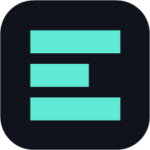

<!DOCTYPE html>
<html lang="pl">
<head>
<meta charset="UTF-8">
<title>Craftes Widget - promo</title>
<link rel="stylesheet" href="../../vendor/fonts/inter.css">
<style>
  :root {
    --bg: #070a12;
    --bone: #f3efe6;
    --silver: #aab1bf;
    --accent: #5eead4;
    --blue: #38bdf8;
    --violet: #8b5cf6;
  }
  * { margin: 0; padding: 0; box-sizing: border-box; }
  html, body, #root { width: 100%; height: 100%; overflow: hidden; }
  body {
    font-family: 'Inter', system-ui, sans-serif;
    color: var(--bone);
    background: var(--bg);
    position: relative;
  }
  /* tlo: poswiaty + delikatna siatka kropek */
  .bg {
    position: absolute; inset: 0;
    background:
      radial-gradient(55% 70% at 8% 0%, rgba(56,189,248,0.22), transparent 70%),
      radial-gradient(45% 60% at 95% 15%, rgba(139,92,246,0.25), transparent 70%),
      radial-gradient(50% 60% at 70% 110%, rgba(94,234,212,0.22), transparent 70%),
      var(--bg);
  }
  .bg::after {
    content: ''; position: absolute; inset: 0;
    background-image: radial-gradient(rgba(255,255,255,0.07) 1px, transparent 1px);
    background-size: 22px 22px;
    mask-image: linear-gradient(90deg, rgba(0,0,0,0.9), rgba(0,0,0,0.2));
  }

  .layout { position: relative; height: 100%; display: flex; align-items: center; padding: 0 72px; gap: 56px; }
  .text { flex: 1; min-width: 0; }
  .visual { flex: none; position: relative; display: flex; align-items: center; justify-content: center; }

  .brand { display: flex; align-items: center; gap: 14px; margin-bottom: 26px; }
  .brand img { width: 46px; height: 46px; border-radius: 12px; box-shadow: 0 0 24px rgba(94,234,212,0.35); }
  .brand span { font-weight: 600; font-size: 17px; letter-spacing: 0.02em; color: var(--silver); }

  .eyebrow {
    display: inline-flex; align-items: center; gap: 8px;
    font-size: 13px; font-weight: 600; letter-spacing: 0.08em; text-transform: uppercase;
    color: var(--accent);
    background: rgba(94,234,212,0.08);
    border: 1px solid rgba(94,234,212,0.25);
    padding: 7px 13px; border-radius: 999px;
    margin-bottom: 20px;
  }
  .eyebrow::before { content: ''; width: 7px; height: 7px; border-radius: 50%; background: var(--accent); box-shadow: 0 0 10px var(--accent); }

  h1 {
    font-size: 64px; line-height: 1.04; font-weight: 700; letter-spacing: -0.03em;
    background: linear-gradient(100deg, #ffffff 30%, #a5f3fc 70%, var(--accent));
    -webkit-background-clip: text; color: transparent;
    margin-bottom: 20px;
  }
  h2 {
    font-size: 46px; line-height: 1.08; font-weight: 700; letter-spacing: -0.025em;
    background: linear-gradient(100deg, #ffffff 40%, #a5f3fc);
    -webkit-background-clip: text; color: transparent;
    margin-bottom: 18px;
  }
  .lead { font-size: 19px; line-height: 1.5; color: var(--silver); max-width: 560px; margin-bottom: 30px; }

  ul.points { list-style: none; display: grid; gap: 13px; }
  ul.points.two { grid-template-columns: 1fr 1fr; column-gap: 26px; }
  ul.points li { display: flex; align-items: center; gap: 12px; font-size: 17px; font-weight: 500; }
  ul.points li svg { flex: none; width: 22px; height: 22px; }

  .note { margin-top: 30px; font-size: 14px; color: rgba(170,177,191,0.75); letter-spacing: 0.01em; }

  /* zrzuty widgetu */
  /* zrzut karty: zaokraglenie jak w widgecie (14px przy szerokosci 364px) */
  .shot { display: block; border-radius: 16px; filter: drop-shadow(0 24px 50px rgba(0,0,0,0.55)); }
  .glow { position: absolute; inset: 8% 6%; border-radius: 40px; filter: blur(60px); opacity: 0.55;
    background: radial-gradient(circle at 40% 40%, rgba(56,189,248,0.55), rgba(139,92,246,0.35) 55%, transparent 75%); }

  /* hero: kolumna widgetu przycieta od dolu */
  .column {
    position: relative; width: 340px; height: 600px; overflow: hidden; border-radius: 20px;
    mask-image: linear-gradient(180deg, #000 78%, transparent);
    margin-top: 40px;
  }
  .column img { width: 340px; display: block; }
  .float {
    position: absolute; width: 300px; left: -150px; bottom: 26px;
    transform: rotate(-3deg);
    border-radius: 12px;
    filter: drop-shadow(0 30px 60px rgba(0,0,0,0.65));
  }
  /* hero: tekst konczy sie przed wysunieta karta */
  .hero { justify-content: space-between; }
  .hero .text { flex: 0 1 590px; }
  .hero h1 { font-size: 54px; }
  .hero .lead { font-size: 18px; }

  /* pulpit */
  .desktop { position: absolute; inset: 0; }
  .desktop .wall {
    position: absolute; inset: 0;
    background:
      radial-gradient(60% 80% at 20% 20%, rgba(56,189,248,0.45), transparent 65%),
      radial-gradient(50% 70% at 75% 30%, rgba(139,92,246,0.45), transparent 65%),
      radial-gradient(70% 60% at 40% 100%, rgba(94,234,212,0.35), transparent 65%),
      #0b1020;
  }
  .desktop .widget-dock {
    position: absolute; right: 0; top: 0; bottom: 48px; width: 360px; overflow: hidden;
    mask-image: linear-gradient(180deg, #000 88%, transparent);
  }
  .desktop .widget-dock img { width: 360px; display: block; }
  .taskbar {
    position: absolute; left: 0; right: 0; bottom: 0; height: 48px;
    background: rgba(20,24,36,0.82); backdrop-filter: blur(20px);
    border-top: 1px solid rgba(255,255,255,0.06);
    display: flex; align-items: center; justify-content: center; gap: 10px;
  }
  .taskbar i { width: 30px; height: 30px; border-radius: 7px; background: rgba(255,255,255,0.12); display: block; }
  .taskbar i:first-child { background: linear-gradient(135deg, #38bdf8, #2563eb); }
  .tray { position: absolute; right: 18px; display: flex; align-items: center; gap: 14px; font-size: 12px; color: #dfe4ee; }
  .tray img { width: 18px; height: 18px; border-radius: 4px; box-shadow: 0 0 0 2px rgba(94,234,212,0.6), 0 0 14px rgba(94,234,212,0.6); }
  .tray .clock { text-align: right; line-height: 1.3; }
  .desktop .caption {
    position: absolute; left: 72px; top: 50%; transform: translateY(-58%); max-width: 640px;
  }
  .arrow {
    position: absolute; right: 372px; top: 50%; width: 120px; height: 2px;
    background: linear-gradient(90deg, transparent, var(--accent));
  }
  .arrow::after { content: ''; position: absolute; right: -2px; top: -5px; border: 6px solid transparent; border-left: 9px solid var(--accent); }

  .stack { display: flex; flex-direction: column; gap: 4px; }
</style>
</head>
<body>
<div class="bg"></div>
<div id="root"></div>

<script>
  const CHECK = '<svg viewBox="0 0 24 24"><circle cx="12" cy="12" r="11" fill="rgba(94,234,212,0.14)" stroke="rgba(94,234,212,0.55)"/><path d="M7.5 12.5l3 3 6-6.5" fill="none" stroke="#5eead4" stroke-width="2.2" stroke-linecap="round" stroke-linejoin="round"/></svg>';
  const points = (list, two) => `<ul class="points${two ? ' two' : ''}">${list.map(t => `<li>${CHECK}<span>${t}</span></li>`).join('')}</ul>`;
  const brand = `<div class="brand"><span>Craftes Widget</span></div>`;
  const B = 'build/';

  const feature = (eyebrow, title, lead, list, visual, note) => `
    <div class="layout">
      <div class="text">
        ${brand}
        <div class="eyebrow">${eyebrow}</div>
        <h2>${title}</h2>
        <p class="lead">${lead}</p>
        ${points(list)}
        ${note ? `<p class="note">${note}</p>` : ''}
      </div>
      <div class="visual"><div class="glow"></div>${visual}</div>
    </div>`;

  const PAGES = {
    hero: () => `
      <div class="layout hero">
        <div class="text">
          ${brand}
          <div class="eyebrow">Widgety na pulpit · Windows 10 / 11</div>
          <h1>Wszystko, co ważne,<br>na krawędzi ekranu</h1>
          <p class="lead">Przezroczysty panel widgetów: temperatury i obciążenie podzespołów, krypto i akcje, muzyka, zadania, zegar i pogoda — w jednym lekkim oknie.</p>
          ${points(['CPU, GPU, RAM i VRAM', 'Krypto i akcje z wykresami', 'Sterowanie muzyką', 'Lista zadań i notatki', 'Zegar i pogoda', 'Ikona w zasobniku'], true)}
        </div>
        <div class="visual">
          <div class="glow"></div>
          <div class="column"></div>
          
        </div>
      </div>`,

    desktop: () => `
      <div class="desktop">
        <div class="wall"></div>
        <div class="caption">
          ${brand}
          <div class="eyebrow">Zawsze pod ręką</div>
          <h2>Przyklejony do prawej<br>krawędzi monitora</h2>
          <p class="lead">Zajmuje całą wysokość drugiego monitora, nie zasłania paska zadań i zawsze jest na wierzchu.</p>
          ${points(['Chowa się do zasobnika jednym kliknięciem', 'Opcjonalne uruchamianie z Windows', 'Karty ułożysz po swojemu, przeciągając je'])}
        </div>
        <div class="arrow"></div>
        <div class="widget-dock"></div>
        <div class="taskbar">
          <i></i><i></i><i></i><i></i><i></i>
          <div class="tray">
            <span>⌃</span><span>🔊</span>
            <div class="clock">21:37<br>20.11.2026</div>
          </div>
        </div>
      </div>`,

    monitor: () => feature('Podzespoły', 'Temperatury, RAM i VRAM<br>na żywo',
      'Odczyt prosto z czujników przez OpenHardwareMonitorLib — bez instalowania dodatkowych programów.',
      ['Temperatura i obciążenie CPU oraz GPU', 'Zajętość RAM i pamięci karty graficznej', 'Proces, który najbardziej obciąża CPU, GPU i RAM', 'Lekki helper: ok. 0,3% jednego rdzenia'],
      ``),

    music: () => feature('Muzyka', 'Sterowanie muzyką<br>jak w telefonie',
      'Widget pokazuje to, co gra w systemie — Spotify, YouTube w przeglądarce i inne odtwarzacze.',
      ['Okładka, tytuł i wykonawca', 'Świecący pasek postępu w stylu One UI', 'Poprzedni, pauza i następny jednym kliknięciem', 'Przez Windows Media Session — bez logowania'],
      ``),

    markets: () => feature('Krypto i akcje', 'Kursy i wykresy<br>zawsze pod ręką',
      'Bitcoin, Ethereum i inne kryptowaluty oraz akcje z giełd na całym świecie — także z GPW.',
      ['Wykresy 1h–24h dla krypto, 1D–1R dla akcji', 'Najedź na wykres: cena i zmiana w danym momencie', 'Dane z Binance, CoinGecko i Yahoo Finance', 'Bez kluczy API i bez zakładania konta'],
      ``),

    todo: () => feature('Organizacja', 'Zadania, zegar<br>i pogoda',
      'Drobne rzeczy, które warto mieć cały czas na widoku.',
      ['Lista zadań z odhaczaniem i edycją', 'Notatki edytowane w miejscu', 'Zegar i aktualna pogoda dla wybranego miasta', 'Blokada układu jedną kłódką'],
      `<div class="stack"></div>`)
  };

  const type = new URLSearchParams(location.search).get('type') || 'hero';
  document.getElementById('root').innerHTML = PAGES[type]();
  if (type === 'desktop') document.querySelector('.bg').remove();
</script>
</body>
</html>
